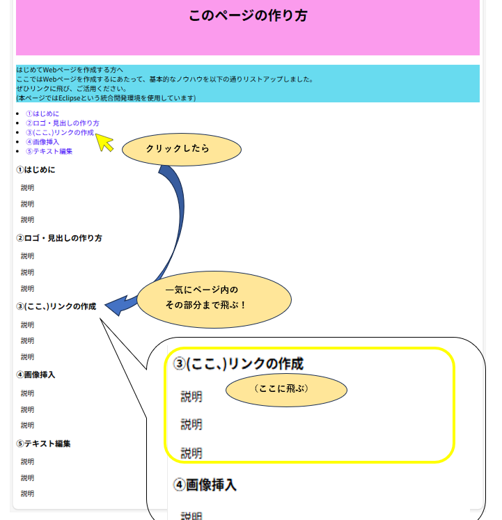

≪｢外部サイトへのリンク｣の場合≫
構文は『<a href="絶対パス">○○○</a>』です
絶対パスとは、｢https://｣もしくは｢http://｣から始まるURLです。
≪｢ページ内リンク｣の場合≫
｢ページ内リンク｣について、まずイメージは以下の通りとなります。
この様に、ページ内にある、実際に書かれている場所までジャンプする時に使えます。長いページだと便利ですね。
試しに、イメージ図のようにリストの「③(ここ、)リンクの作成」をクリックしたら
ページ内の下に③(ここ、)リンクの作成と説明文を書いた所まで飛ぶようにしてみましょう。
まずは、サイト内の飛びたいところに目印(=id属性と呼ばれるもの)を付けます。
各リンクの説明文を書く際に、<h3>タグを使って書くとしましょう。
その<h3>タグの前に、<div id="○○">と書き、id属性を設定します。
最後に説明文を書き終わったら</div>で閉じます。
今回はこのid属性を、｢first｣、｢logo｣、「link」、｢img｣、｢text｣と名付けてみましょう。
続いて、
構文は『<a href="HTMLファイルのURLまたはパス#id属性の値">リンクテキスト</a>』です
今回は
『<a href="index.html#first">①はじめに</a>』や、
『<a href="index.html#link">③(ここ、)リンクの作成</a>』などとすればOKです
index.htmlは、省略して、『<a href="#link">③(ここ、)リンクの作成</a>』などと書くこともできるのですが、
もし他のプログラムで流用するとなった場合に、他のページに貼り付けた途端リンクできなくなったとなってはいけませんので
敢えて残してもOKです。
以上を踏まえて、仮に本サイトを｢ページ内リンク｣で作成した場合のプログラムは、下の様に記述することができます↓
1 <!DOCTYPE html>
2 <html>
3 <head>
4 <meta charset="UTF-8">
5 <title>あなたが付けたタイトル</title>
6 </head>
7 <body>
8 <header>
9 <h1>このページの作り方</h1>
10 </header>
11
12 <main>
13 <p>はじめてWebページを作成する方へ<br>
14 ここではWebページを作成するにあたって、基本的なノウハウを以下の通りリストアップしました。<br>
15 ぜひリンクに飛び、ご活用ください。<br>
16 (本ページではEclipseという統合開発環境を使用しています)
17 </p>
18
19 <nav>
20 <lu>
21 <li><a href="index.html#first">①はじめに</a></li>
22 <li><a href="index.html#logo">②ロゴ・見出しの作り方</a></li>
23 <li><a href="index.html#link">③(ここ、)リンクの作成</a></li>
24 <li><a href="index.html#img">④画像挿入</a></li>
25 <li><a href="index.html#text">⑤テキスト編集</a></li>
26 </lu>
27 </nav>
28
29 <div id="first">
30 <h3>①はじめに</h3>
31 <p>説明</p>
32 <p>説明</p>
33 <p>説明</p>
34 </div>
35
36 <div id="logo">
37 <h3>②ロゴ・見出しの作り方</h3>
38 <p>説明</p>
39 <p>説明</p>
40 <p>説明</p>
41 </div>
42
43 <div id="link">
44 <h3>③(ここ、)リンクの作成</h3>
45 <p>説明</p>
46 <p>説明</p>
47 <p>説明</p>
48 </div>
49
50 <div id="img">
51 <h3>④画像挿入</h3>
52 <p>説明</p>
53 <p>説明</p>
54 <p>説明</p>
55 </div>
56
57 <div id="text">
58 <h3>⑤テキスト編集</h3>
59 <p>説明</p>
60 <p>説明</p>
61 <p>説明</p>
62 </div>
63
64 </main>
65
66 <footer>
67
68 </footer>
69
70 </body>
71 </html>